Projeto Integrador IV · Time 11 · PUC Campinas · 2026
Chamada digital com três canais de confirmação e acompanhamento de presenças em tempo real.
Relatório de estado do projeto · develop 9946a94 · 22/11/2026
Objetivo
Dar ao professor opções para registrar presença com rapidez, mantendo a validação no servidor e atualizando o painel ao vivo.
Lista manual com marcação individual ou em lote.
Token TOTP renovável, lido pelo celular do aluno.
Token codificado em FSK para captura no navegador.
Arquitetura

Fluxo de presença
Token rotativo com TOTP; a localização é comparada ao raio da sala.
Token de seis dígitos, enquadramento com preâmbulo e CRC; o servidor aplica as mesmas regras de presença.
Tecnologia
Interfaces
Next.js 16 · React 19
API
Spring Boot · Java 21
Tempo real
WebSocket → ponte TCP → servidor de sessão
Dados
MongoDB 8 · replica set · Change Streams
Entrada
Nginx · HTTP, API e WebSocket
Execução
Docker Compose
Execução
git clone --branch develop --single-branch https://github.com/Leonunciaroni/PI_IV-Time-11.git
cd PI_IV-Time-11/infra
cp .env.example .env
docker compose up -d --build
docker compose ps
Defina `JWT_SECRET` com um valor aleatório de pelo menos 32 bytes. O README contém os endereços locais, as contas de demonstração e os comandos para parar os serviços.
Validação
imagens de aplicação construídas no clone de teste
resposta de `/nginx-health`, `/professor` e `/aluno`
Instalação: clone da develop 9946a94, `.env` novo e volumes isolados; contas demo criadas.
Redmi Note 14 / Chrome: HTTPS, câmera, microfone e localização confirmados; apps Professor e Aluno abriram.
Fluxo webPermissões móveisComposeO teste de instalação foi feito neste notebook, com Docker Desktop e imagens já disponíveis. Ele não comprova a execução em um segundo computador.
Limites conhecidos
Medir em diferentes distâncias, ruído e modelos de celular. Issues #13, #26, #33 e #47.
Confirmar 15 salas × 70 alunos, sem perda e com check-in abaixo de um segundo. Issue #52.
Relatório, apresentação, checklist e tag `semana-7` publicados em develop. Issue #75.
Fast Attendance · Time 11
Código, instalação e critérios de validação estão documentados no repositório.
PI IV · PUC Campinas · 2026